Getting Started
一連の基本操作を説明します。
- BP3D Viewer (http://lifesciencedb.jp/bp3d)上で「呼吸器系」と「循環器系」のアイコンを画面下部のパネル(Pallet、パレット)にドラッグし、追加します。
反対にPalletからパーツを削除するには、そのパーツをパレット上で選択し、キーボードの「Delete」キーを押下します。
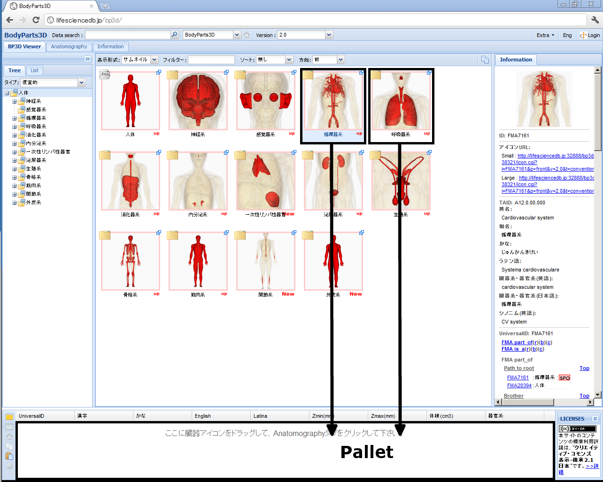
- 画面左上の「Anatomography」タブを選択し、Anatomography画面に切り替えます。
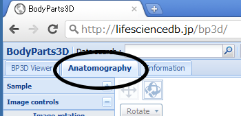
- 画像が表示されます。
Anatomography画面上のマウス操作もしくはパネル操作で作成した解剖画像を操作できます。マウス操作で直感的に、パネル操作で数値的に操作できます。
マウス操作
- 左クリック - クリックした位置の臓器名表示
- 左ドラッグ - 回転
- 中ボタンもしくはホイールを押しながらドラッグ - 移動
- ホイール回転 - カーソル位置を中心に拡大・縮小（奥から手前→縮小、手前から奥→拡大）
- 左ダブルクリック - ダブルクリックした位置を画面中心に移動して拡大
Macintoshで中ボタン未定義の場合は、「アップルキー」を押しながらの左・右ドラッグが中ボタンドラッグになります。
また中ボタンは以下の手順で定義できます。詳細
パネル操作
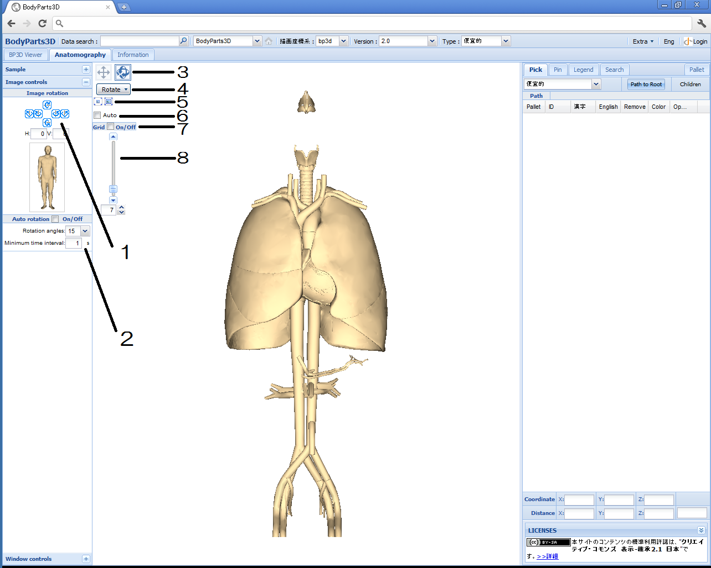
- Image rotation - 矢印をクリックして水平、鉛直軸で回転
- Auto rotation - チェックボックスにチェックを入れると指定秒毎に指定角度ずつ回転
- 左ドラッグ回転・移動切替 -
 選択時、左右ドラッグで移動
選択時、左右ドラッグで移動- 選択時、左右ドラッグで回転（デフォルト）
0.4秒間マウスを押し続けると自動的に切替ります。
- Rotateナビゲーション - アイコンが表示する視点に素早く移動
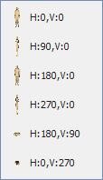
- Auto rotateチェックボックス - チェックボックスにチェックを入れると指定秒毎に指定角度ずつ回転
- センタリング／フォーカスボタン
- クリックにより臓器群を画面中央に移動
- クリックにより臓器群を画面中央に最大化表示
- Grid On/Off - チェックを入れると、指定色・指定間隔毎にグリッドを表示
- ズームスライダー - 画面中心を中心に拡大、縮小。数値入力（最拡大：100、最縮小：1)も可能
- 気管をクリックします。
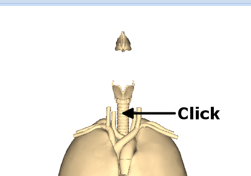
- 画面右側の「Pick」リストにクリックした場所の臓器名である気管が表示されます。
また気管は呼吸器系、全身（人体）の一部でもあるため、気管を含む部位（上位概念）の解剖名称も同時に表示されます。
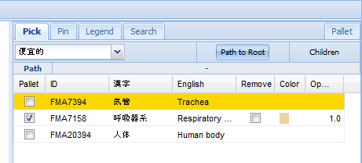
解剖名称の上位・下位概念の情報は、
Foundational Model of Anatomy (FMA)のpart-of、is-aの情報を表示しています。
「Path to Root」を選択すると上位概念が、「Children」を選択すると下位概念が表示されます。
- 今度は左肺の上部をクリックします。
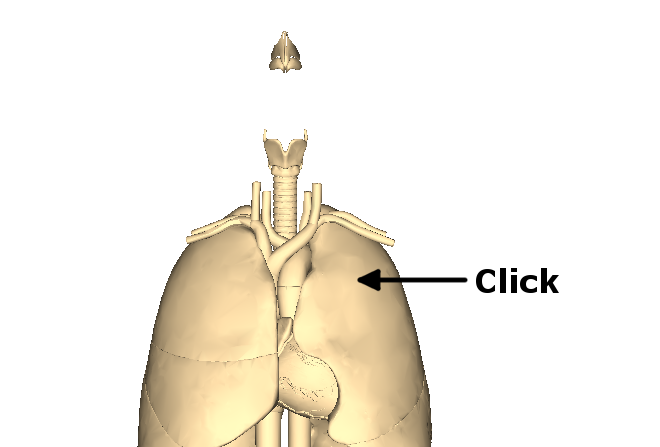
- 「Pick」リストの左肺上葉の行の「Pallet」列のチェックボックスを選択し、Palletに追加します。
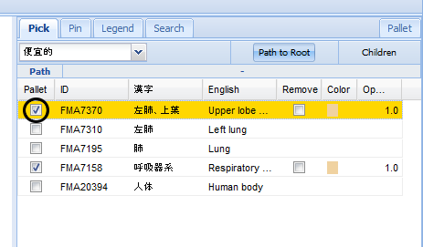
- Palletに追加するとパーツ色変更、パーツの削除、半透明表示ができます。
パーツ色変更
- 左肺上葉の「color」列のセルをクリックすると、選択リストが現れます。
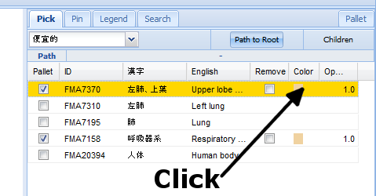
- その状態でもう一回選択リストをクリックするとカラーパレットが表示されますので、色を選択します。
もしくは、Color RGBを16進数(例：赤の場合#ff0000)で選択リスト内にタイプインします。
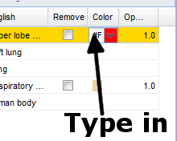
- 左肺上葉の色が変わりました。
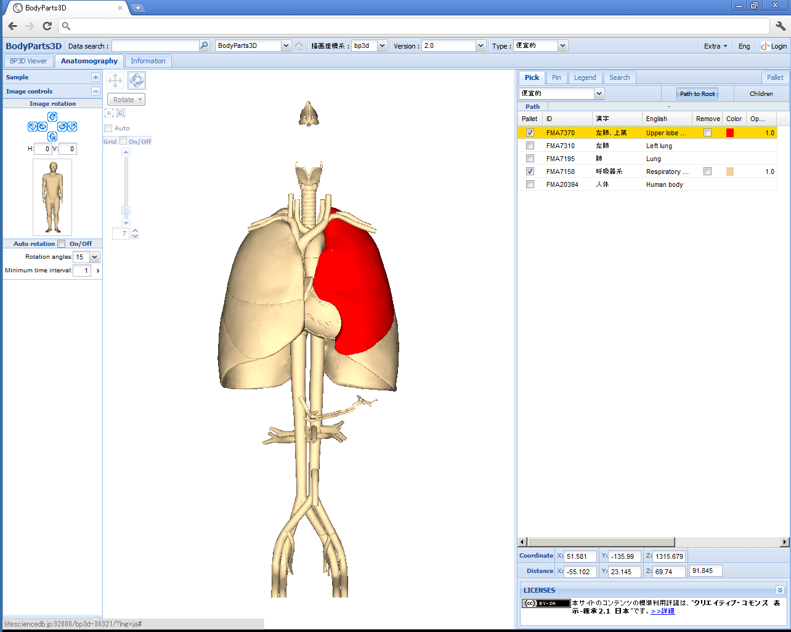
半透明表示
- 左肺上葉の「Opacity」（不透明度）列のセルをクリックすると、選択リストが現れます。
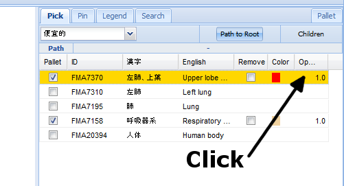
- その状態でもう一回選択リストをクリックすると選択可能な不透明度のリストが表示されますので、適当なものを選択します。
0.0が完全透明で1.0が完全不透明です。0に近づくほど透明に近づきます。デフォルトは1.0です。
- 左肺上葉が半透明表示になりました。
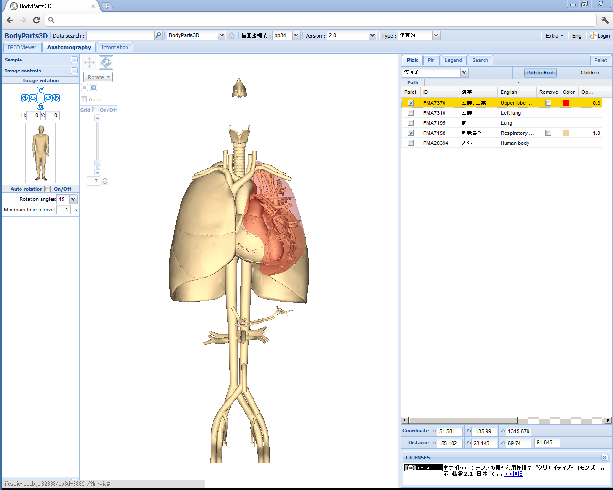
パーツの削除
- 左肺上葉の「remove」列のセルをチェックします。
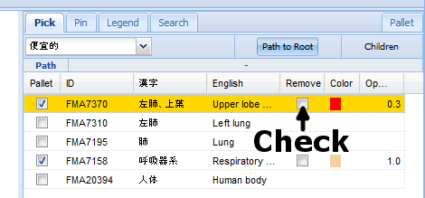
- 左肺上葉が消えました。
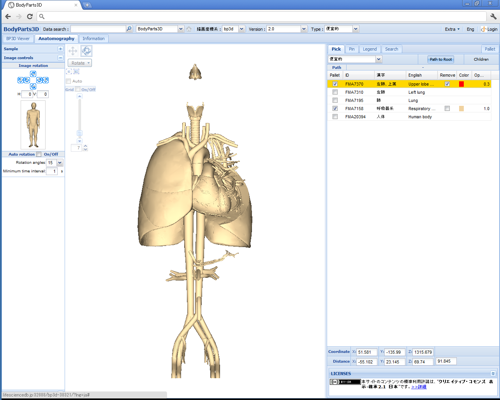
「remove」のチェックを外すと元に戻ります。
パーマリンクを取得してブラウザにブックマークします
- 画面右上の「Extra」ドロップダウンボタンを押下し、「Link」メニューをクリックします。
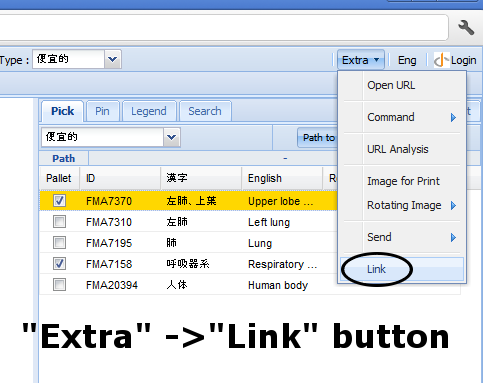
- ポップアップ画面に表示された「このリンクを貼り付けてBodyParts3Dを共有できます」テキスト上で左クリックするなどして、リンク全体を選択（背景が反転した）状態にします。
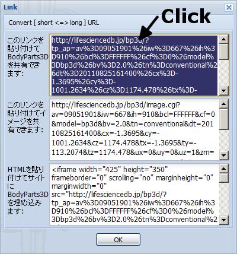
パーマリンクは３種類ありますので、必要に応じて使い分けます。
- このリンクを貼り付けてBodyParts3Dを共有できます
リンクURLを表示すると、現在のAnatomographyの状態が再現されます。回転、移動、パーツの追加などの編集操作ができます。
- このリンクを貼り付けてイメージを共有できます
リンクURLを表示すると、Anatomographyに表示中の画像が表示されます。編集操作はできません。
-
HTMLを貼り付けてサイトにBodyParts3Dを埋め込みます
ここに表示されているHTMLタグをウェブページに埋め込んでおくと、そのページ中に操作可能なAnatomographyを埋め込むことができます。
- 以下のような方法で、選択状態のリンクをコピーします。
- ショートカットキーを使ってコピー（例：「Ctrl+C」）。もしくは、
- 選択領域で右クリックしてメニューを表示し、「コピー」を選択します。
- ブラウザのアドレスバーにペーストします。
- ショートカットキーを使ってペースト（例：「Ctrl+V」）。もしくは、
- アドレスバー上で右クリックしてメニューを表示し、「ペースト」を選択します。
ペースト前：
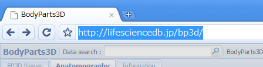
ペースト後：
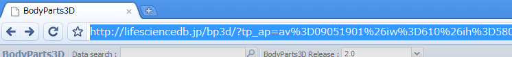
同様の方法で、アドレスバー以外の場所（テキストエディタなど）にもペーストして保存できます。
- リロードします。同じ画面が再描画されます。
- ブラウザのブックマークやお気に入りに保存します。保存後は、他のブックマークと同様に呼び出せます。
印刷、メールで送信
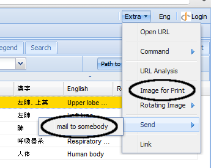
- 印刷 - 画面右上「Image for Print」ボタンをクリックします。ブラウザに画像が表示されますので、ブラウザの印刷機能で印刷します。
- メールで送信 - 画面右上「mail to somebody」ボタンをクリックします。本文にパーマリンクが貼り付けられたメール画面が起動します。
または「パーマリンク取得」でコピーしたリンクをメール本文に貼り付けても送信できます。